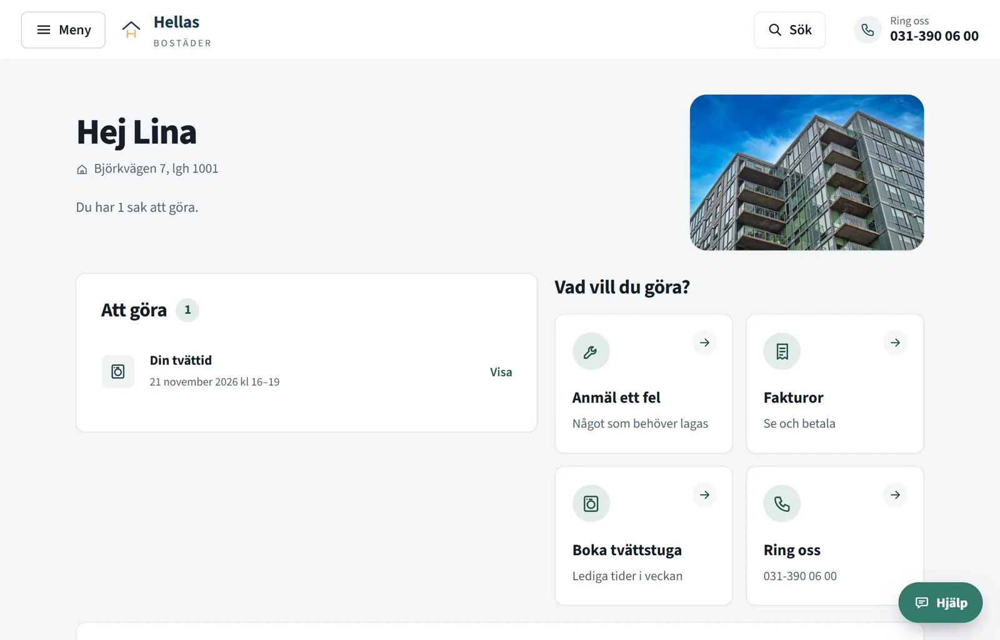

← Alla projektPrivat kod
02 / 06
Boendeportalen
En portal för hyresvärdar och bostadsrättsföreningar.
Visas gärna på förfrågan
02 / 06
En portal för hyresvärdar och bostadsrättsföreningar.
Visas gärna på förfrågan
Hyresvärdar och bostadsrättsföreningar behöver en plats där de boende kan sköta sina ärenden och där personalen kan hålla ordning på dem.
Portalen är byggd så att varje kund får en helt egen miljö. Ingen kund delar databas eller inloggning med någon annan.
